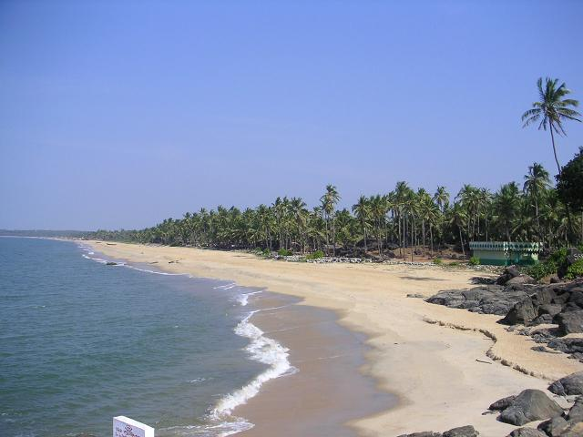
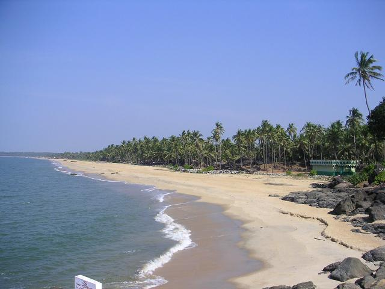

Key Beaches in Kerala
1. Varkala Beach (Varkala)
Why it's famous: Varkala Beach is famous for its unique cliffs, offering breathtaking views of the Arabian Sea. It’s known for its peaceful ambiance, making it ideal for sunbathing, swimming, and yoga. The Papanasam Beach nearby is believed to have cleansing properties..read more
2. Kovalam Beach (Thiruvananthapuram)
Why it's famous: Kovalam is one of Kerala's most iconic beaches, known for its crescent-shaped coastline, golden sand, and clear waters. It's perfect for water sports like surfing and has several resorts offering a relaxing getaway by the sea..read more
3. Cherai Beach (Kochi)
Why it's famous: Cherai Beach offers a tranquil retreat, with its golden sands, clear water, and the backdrop of lush coconut groves. It's a great destination for swimming, relaxing, and watching the sunset. It also has a peaceful vibe, away from the usual tourist crowds ..read more
4. Alappuzha Beach (Alappuzha)
Why it's famous: Alappuzha Beach, also known as Alleppey Beach, is famous for its calm waters, long sandy stretch, and historic lighthouse. It's the gateway to Kerala’s backwaters and is known for its serene beauty and boat rides on the backwaters..read more
5. Munroe Island (Kollam)
Why it's famous: Munroe Island is a unique destination located at the confluence of the Kerala backwaters and the Arabian Sea. Known for its beautiful landscapes and serene environment, it’s a great spot to explore the village life, local culture, and enjoy a peaceful boat ride..read more
Activities at Kerala’s Beaches
- Water Sports: Kovalam and Varkala are great for water activities like surfing, parasailing, and kayaking, providing an adrenaline rush for adventure seekers.
- Beach Walks & Sunbathing: Beaches like Cherai and Alappuzha are perfect for peaceful beach walks and relaxing under the sun, offering a calm environment to unwind.
- Backwater Cruises: Alappuzha and Munroe Island are famous for their backwater cruises, where you can enjoy a boat ride through Kerala’s serene waterways, surrounded by lush landscapes.
- Ayurvedic Spas & Wellness: Kerala is known for its Ayurvedic treatments, and many resorts near Kovalam and Cherai offer wellness packages that include spa treatments, yoga, and meditation.
Best Time to Visit Kerala’s Beaches
- November to February: The peak season in Kerala, with pleasant temperatures and clear skies. This is the best time to visit for beach activities, sightseeing, and enjoying the natural beauty.
- March to May: The hotter months can be quite warm, but the beaches are less crowded. It's a great time for those who prefer a more private experience and can handle the heat.
- June to September: The monsoon season brings heavy rains and lush greenery. While the weather is more humid, it’s perfect for those looking to experience Kerala’s rejuvenating monsoon atmosphere.
Nearby Attractions
1. Padmanabhaswamy Temple
Located in Thiruvananthapuram, the Padmanabhaswamy Temple is an ancient and sacred Hindu temple known for its magnificent architecture and cultural significance. It's an essential stop for history and culture enthusiasts visiting Kerala.
2. Backwaters of Alappuzha
The backwaters of Alappuzha, also known as the "Venice of the East," offer a unique experience where visitors can cruise through tranquil waterways surrounded by lush greenery. It’s one of Kerala’s most iconic attractions.
3. Kovalam Lighthouse
The Kovalam Lighthouse, located near the Kovalam Beach, offers stunning views of the Arabian Sea. Visitors can climb to the top and take in the panoramic vistas of the coastline, making it a popular spot for photography and sightseeing.
Gallery
 
